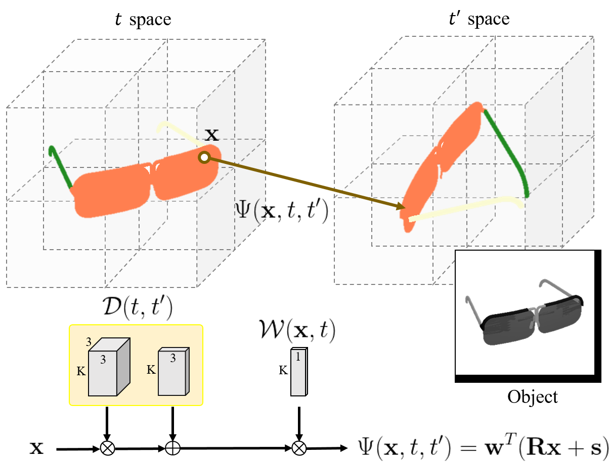

We propose a novel unsupervised method for motion-based 3D part decomposition of articulated objects with a single monocular video of a dynamic scene. In contrast to existing unsupervised methods relying on optical flow or tracking techniques, our approach addresses this problem without additional information by leveraging Gaussian splatting techniques. We generate a series of Gaussians from a monocular video and then analyze the relationship between the Gaussians to decompose the dynamic scene into motion-based parts. To decompose dynamic scenes consisting of articulated objects, we design an articulated deformation field suitable for the movement of articulated objects. And to effectively understand the relationships of Gaussians of different shapes, we propose a 3D reconstruction loss using 3D occupied voxel maps generated from the Gaussians. Experimental results demonstrate that our method outperforms existing approaches in terms of 3D part decomposition for articulated objects and demonstrates competitive image synthesis performance.
Unlike general dynamic NeRF methods assuming non-rigid motions, we design the mapping function considering the properties of pose changes of articulated objects, where the distances between locations belonging to the same part always remain constant.
We use the inferred emptiness voxel map from the NeRF model to represent the 3D structure of the scene.
After applying the relevant transformations to the emptiness voxel map for each part, revoxelizing them, we can map the emptiness voxel map from time t to time t'.